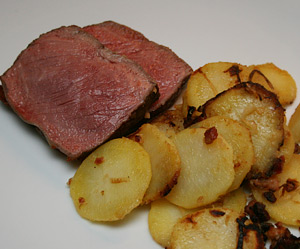

Entrecote double
5,5 von 6Das Entrecote (ca 400 gr) auf allen Seiten kräftig anbraten.
Danach bei 100 Grad eine gute halbe Stunde im Ofen nachgaren.

Das Entrecote (ca 400 gr) auf allen Seiten kräftig anbraten.
Danach bei 100 Grad eine gute halbe Stunde im Ofen nachgaren.

Montagsplausch Nr. 218.